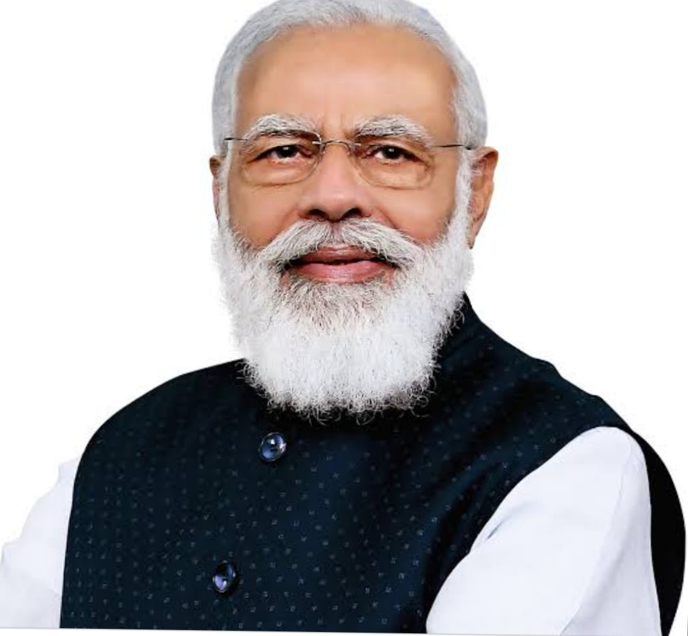

Narendra Damodardas Modi born 17 September 1950) is an Indian politician serving as the 14th and current prime
minister of India since 2014. Modi was the chief minister of Gujarat from 2001 to 2014
and is the Member of Parliament from Varanasi. He is a member of the Bharatiya Janata Party
(BJP) and of the Rashtriya Swayamsevak Sangh (RSS), a right-wing Hindu nationalist paramilitary
volunteer organisation. He is the first prime minister to have been born after India's independence in
1947 and the second prime minister not belonging to the Indian National Congress to have won two consecutive majorities
in the Lok Sabha, or lower house of Indian of parliament.
Narendra Damodardas Modi was born on 17 September 1950 to a Gujarati Hindu family of grocers in Vadnagar, Mehsana district,
Bombay State (present-day Gujarat). He was the third of six children born to Damodardas Mulchand Modi (c. 1915–1989) and Hiraben Modi
(born c. 1920).Modi's family belonged to the Modh-Ghanchi-Teli (oil-presser) community,which is categorised as an Other Backward Class
by the Indian government.
Modi had only infrequently spoken of his family background during his 13 years as chief minister of Gujarat. In the run up to the 2014
national elections, he began to regularly draw attention to his low-ranking social origins and to having to work as a child in his father's
tea shop on the Vadnagar railway station platform,a description that the evidence of neighbours does not entirely corroborate.
Modi completed his higher secondary education in Vadnagar in 1967, where teachers described him as an average student and a keen gifted debater, with interest in theatre.
In June 1975, Prime Minister Indira Gandhi declared a state of emergency in India which lasted until 1977. During this period, known as "The Emergency",
many of her political opponents were jailed and opposition groups were banned.Modi was appointed general secretary of the "Gujarat Lok Sangharsh
Samiti", an RSS committee co-ordinating opposition to the Emergency in Gujarat. Shortly afterwards, the RSS was banned.Modi was forced to go underground
in Gujarat and frequently travelled in disguise to avoid arrest. He became involved in printing pamphlets opposing the government, sending them to Delhi and organising
demonstrations.Modi was also involved with creating a network of safe houses for individuals wanted by the government, and in raising funds for political refugees and
activists.
